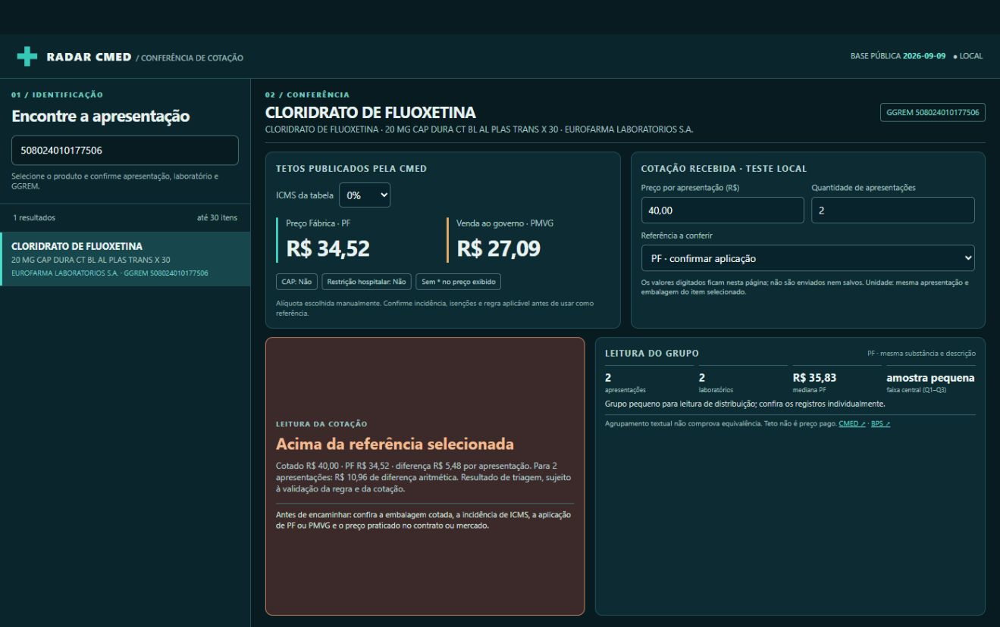

Radar CMED
Uma conferência de cotação hospitalar começa pela identificação da apresentação correta do medicamento.
O painel consulta a lista pública da Anvisa por GGREM, mostra PF e PMVG na alíquota selecionada e compara uma cotação com a referência escolhida. A diferença é mostrada por apresentação e para a quantidade informada.
Construção: tratamento da planilha CMED em Python, interface em HTML, CSS e JavaScript, estatística descritiva e testes de cálculo. O painel apoia triagem; não decide a compra.
